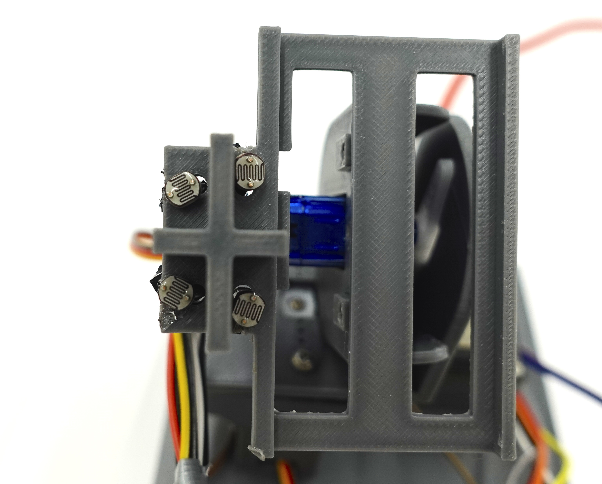
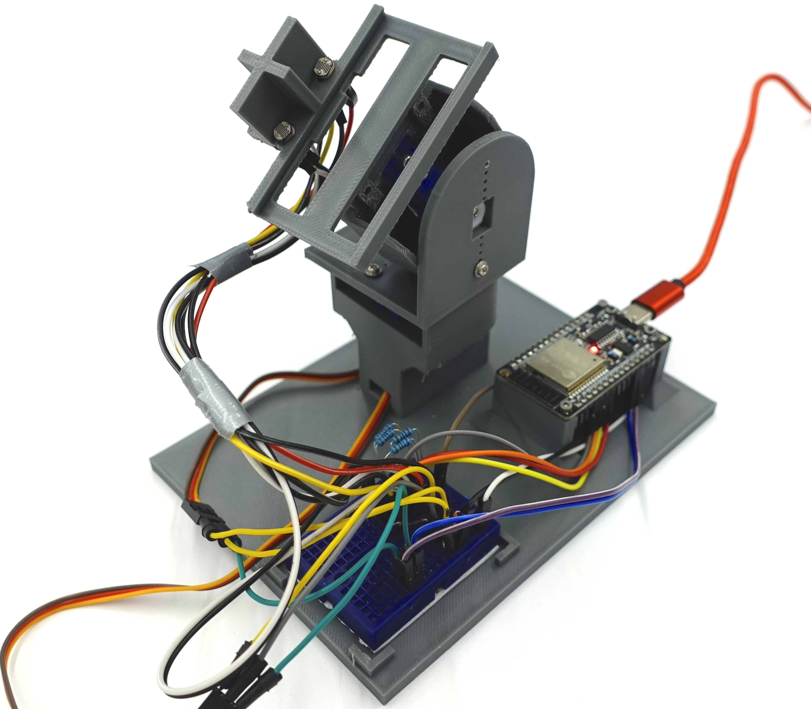

Die intelligente Solarnachführung
Zwei Achsen, vier Augen, volle Energie
Autor: John van Dijk
Lizenzhinweis: CC BY-SA 4.0
Ziel: In diesem Modul fügen wir alles zusammen. Die Sensortechnik aus Modul 1 und der Mikrocontroller aus Modul 2 treffen auf die Mechanik aus Modul 3. Das Ziel ist eine Solarnachführung, die sich automatisch mit zwei Servomotoren über vier LDR-Sensoren zur hellsten Lichtquelle (Sonne) ausrichtet.
Lernziele
- Steuerungslogik: If/Else-Bedingungen nutzen, um Entscheidungen zu treffen.
- Regelungstechnik: Hysterese und Schwellenwerte verstehen, damit die Motoren nicht "zittern".
- Systemintegration: Sensoren und Aktoren an einem Mikrocontroller (ESP32) kombinieren.
1. Die Hardware: Augen und Muskeln
Wir verwenden für unsere Nachführung vier LDRs (als "Augen") und zwei Servomotoren (als "Muskeln"), um die horizontale (Ost-West) und vertikale (Hoch-Runter) Achse zu steuern.
1.1. Anschluss eines LDRs (Spannungsteiler)
Bevor wir vier LDRs für die Nachführung zusammenschalten, schauen wir uns den Anschluss eines einzelnen LDRs an. Da der ESP32 nur Spannungen messen kann, verwenden wir einen Spannungsteiler.
Anschluss-Reihenfolge
Die genaue Funktionsweise des Spannungsteilers findest du ausführlich in Modul 1 (Fotometer), Sektion 1.2 erklärt.
Für den Anschluss gilt folgende Reihenfolge (in Reihe geschaltet):
- 3.3V (VCC) am ESP32
- LDR (Foto-Widerstand)
- Abgriff / Verbindungspunkt zum analogen Eingang (ADC-Pin)
- Festwiderstand (R1, z. B. 10 kΩ)
- GND (Masse) am ESP32
1.2. Das Prinzip der Steuerung: Vergleich von zwei LDRs
Um eine Achse (z.B. Ost-West) zu steuern, vergleichen wir zwei LDRs miteinander. Ist die linke Seite heller als die rechte, drehen wir den Servo nach links. Ist die rechte Seite heller, nach rechts. In dieser vereinfachten Version betrachten wir das Prinzip ohne Messfehler (Rauschen) und Hysterese (Threshold).
Interaktive Simulation: Einfacher LDR-Vergleich
Ziehe die Sonne auf der Bahn hin und her. Der Servo folgt sofort der helleren Seite (ohne Toleranzbereich).
Dieser einfache Helligkeitsvergleich lässt sich in C++ durch eine einfache If-Else-Bedingung umsetzen:
// Lese Analogwerte der beiden LDRs (0 bis 4095 beim ESP32)
int ldrL = analogRead(LDR_LINKS_PIN);
int ldrR = analogRead(LDR_RECHTS_PIN);
// Vergleiche die Werte und steuere den Servomotor
if (ldrL > ldrR) {
// Links ist es heller -> Drehe den Servo schrittweise nach links
servoPos = max(0, servoPos - 1);
} else if (ldrR > ldrL) {
// Rechts ist es heller -> Drehe den Servo schrittweise nach rechts
servoPos = min(180, servoPos + 1);
}
// Position an den Servo senden
servo.write(servoPos);
delay(50); // Kleine Pause zur Beruhigung1.3. Der physische Aufbau: 2 Achsen, 4 LDRs
Um die Solarzelle sowohl horizontal (Ost-West) als auch vertikal (Hoch-Runter) auszurichten, benötigen wir zwei Servomotoren und vier LDRs. Die vier Sensoren werden in einer 2x2-Matrix angeordnet und durch ein Trennkreuz voneinander abgeschottet. So wirft die Sonne je nach Einfallswinkel einen Schatten auf bestimmte Sensoren, wodurch deutliche Helligkeitsunterschiede entstehen.


Stromversorgung der Servos
Servomotoren benötigen beim Anlaufen oft viel Strom. Wir schließen beide Servos an den VIN-Pin (5V) des ESP32 an. Die Steuersignale kommen von zwei digitalen GPIO-Pins.
Hinweis: Sollte der ESP32 bei der Bewegung beider Servos abstürzen oder neustarten, reicht der Strom des USB-Anschlusses eventuell nicht aus.
Platzhalter Bild 3: Fritzing-Schaltplan
Bitte den Schaltplan (ESP32 + 4 LDRs + 2 Servos) hier einfügen.
2. Die Logik: Folge dem Licht
Damit der ESP32 weiß, wohin er die Solarzelle drehen muss, vergleicht er die Helligkeitswerte der gegenüberliegenden Sensoren. Ist es zum Beispiel links heller als rechts, muss der horizontale Servo nach links drehen.
Probier es selbst aus: Ziehe die Sonne auf dem Halbkreis und beobachte, wie die LDR-Werte reagieren!
Das Problem: Zittern
Wenn du das Rauschen aktivierst und die Sonne fast genau in der Mitte positionierst, siehst du, wie die Werte springen. Der Servo würde ununterbrochen zittern. Erhöhe den Schwellenwert (Threshold): Der Servo bewegt sich erst, wenn der Helligkeitsunterschied groß genug ist.
❌ Ohne Threshold (Zittern)
int diff = ldrL - ldrR;
if (diff > 0) {
servo.write(pos + 1); // Nach links
} else if (diff < 0) {
servo.write(pos - 1); // Nach rechts
}✅ Mit Threshold (Ruhig)
int diff = ldrL - ldrR;
int threshold = 50;
if (abs(diff) > threshold) {
if (diff > 0) {
servo.write(pos + 1);
} else {
servo.write(pos - 1);
}
}3. Der Programmcode
Hier fügen wir bald den Code ein. Lade dir vorab schon einmal die ESP32Servo Bibliothek über den Bibliotheksverwalter in der Arduino IDE herunter!